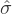

6A technical comment. In the same way that we can weaken the assumptions of the z-test so that we’re only talking about the sampling distribution, we can weaken the t-test assumptions so that we don’t have to assume normality of the population. However, for the t-test it’s trickier to do this. As before, we can replace the assumption of population normality with an assumption that the sampling distribution of is normal. However, remember that we’re also relying on a sample estimate of the standard deviation, and so we also require the sampling distribution of  to be chi-square. That makes things nastier, and this version is rarely used in practice. Fortunately, if the population distribution is normal, then both of these two assumptions are met.